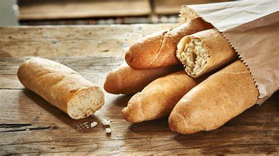
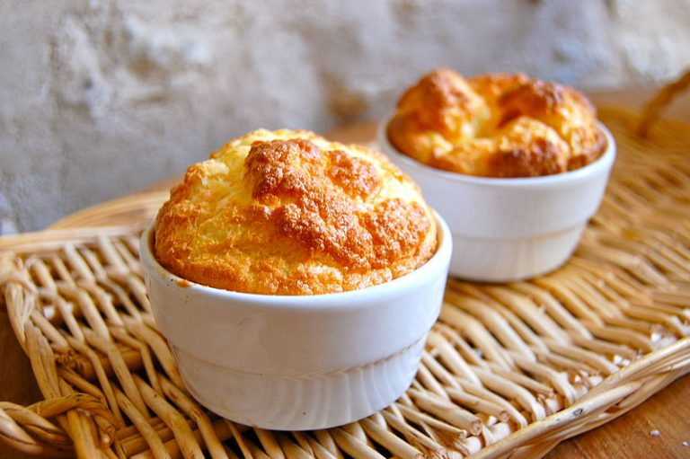
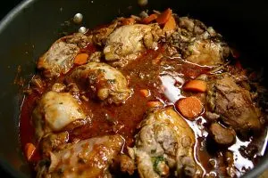
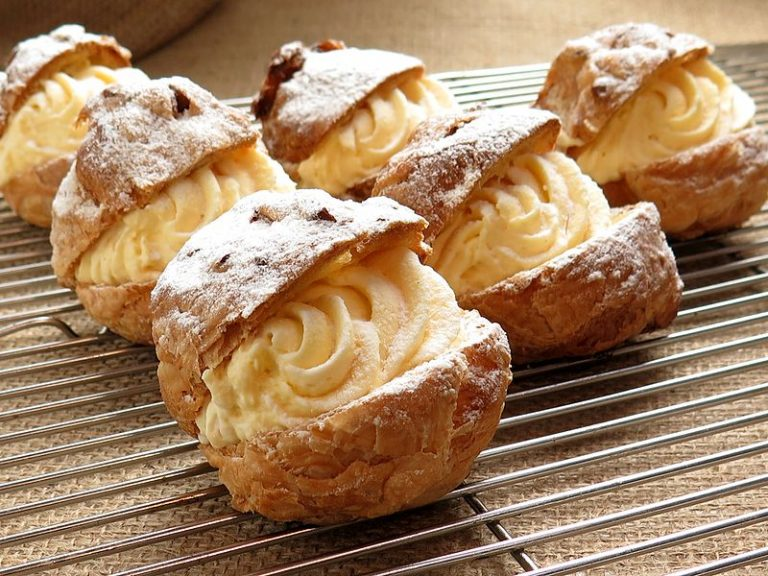
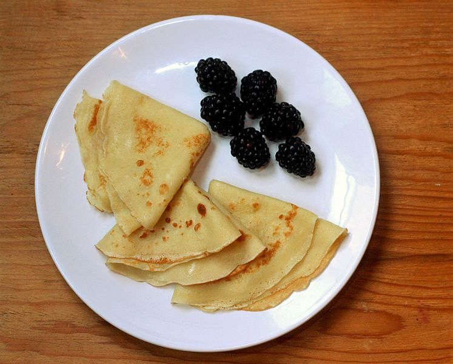
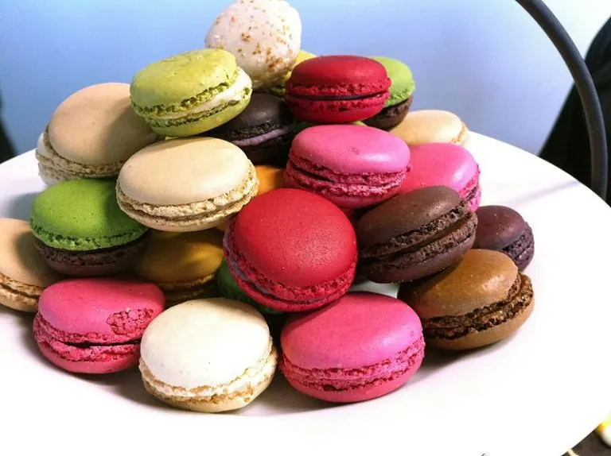
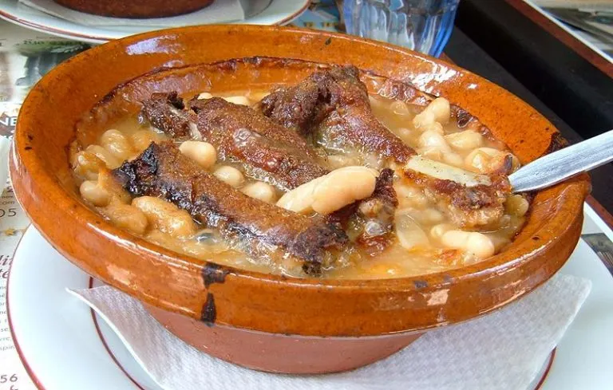

A La Carte
Introducing French
Cuisine.
Here are my recommended Foods to eat while visiting France. This Food's Will make your appetite crumble as you scroll through my recommended foods.

Baguette

Souffle

Le Coq au Vin Burgundy
Le Coq au Vin Burgundy
Coq au vin is a French dish of chicken braised with wine, lardons, mushrooms, and optionally garlic. A red Burgundy wine is typically used, though many regions of France make variants using local wines, such as coq au vin jaune, coq au riesling, coq au pourpre or coq au violet, and coq au Champagne.

Cream Puff
Cream Puff
A profiterole, cream puff, or chou à la crème is a filled French choux pastry ball with a typically sweet and moist filling of whipped cream, custard, pastry cream, or ice cream. The puffs may be decorated or left plain or garnished with chocolate sauce, caramel, or a dusting of powdered sugar. Savory profiterole are also made, filled with pureed meats, cheese, and so on. These were formerly common garnishes for soups.

Crêpe
Crêpe
A crêpe or crepe is a very thin type of pancake. Crêpes are usually one of two varieties: sweet crêpes or savoury galettes. They are often served with a wide variety of fillings such as cheese, fruit, vegetables, meats, and a variety of spreads. Crêpes can also be flambéed, such as in crêpes Suzette.

Macarons
